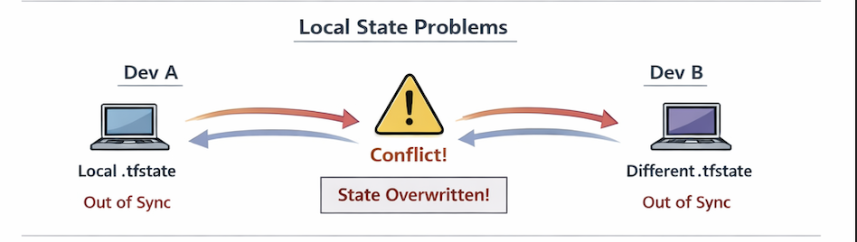
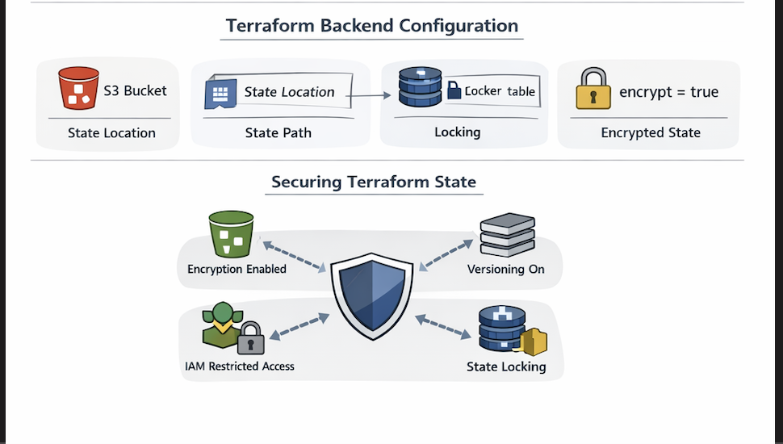
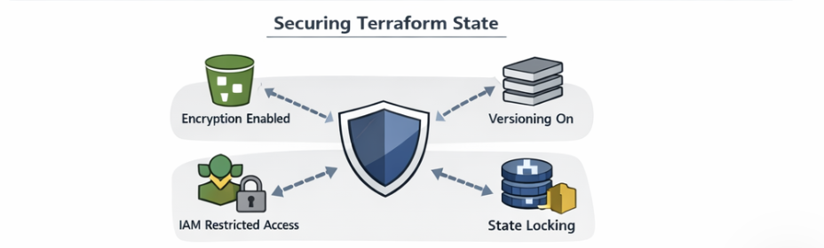

What Terraform State Actually Is
Terraform stores a file (terraform.tfstate) that keeps track of your infrastructure. It maps real-world resources to your configuration.

Terraform only works properly if state is handled correctly. Mismanage it, and your infrastructure will drift or break.
Terraform stores a file (terraform.tfstate) that keeps track of your infrastructure. It maps real-world resources to your configuration.

A proper setup uses S3 for storage and DynamoDB for locking.

terraform {
backend "s3" {
bucket = "my-terraform-state-bucket"
key = "prod/terraform.tfstate"
region = "us-east-1"
dynamodb_table = "terraform-locks"
encrypt = true
}
}

Terraform state is critical. Treat it like production infrastructure, not a temporary file.